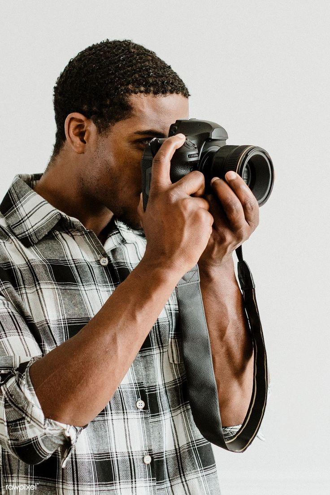
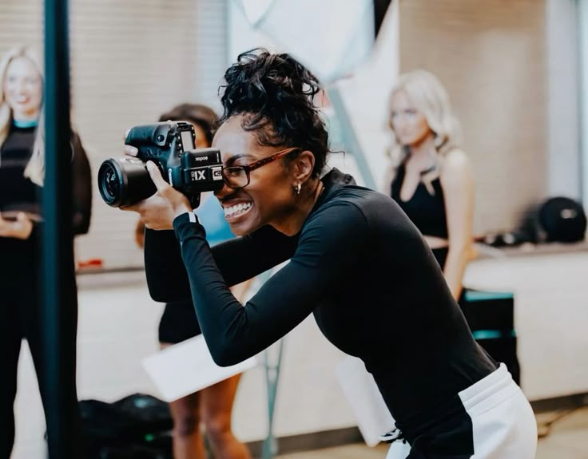
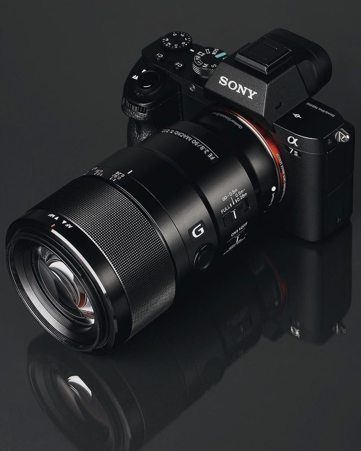
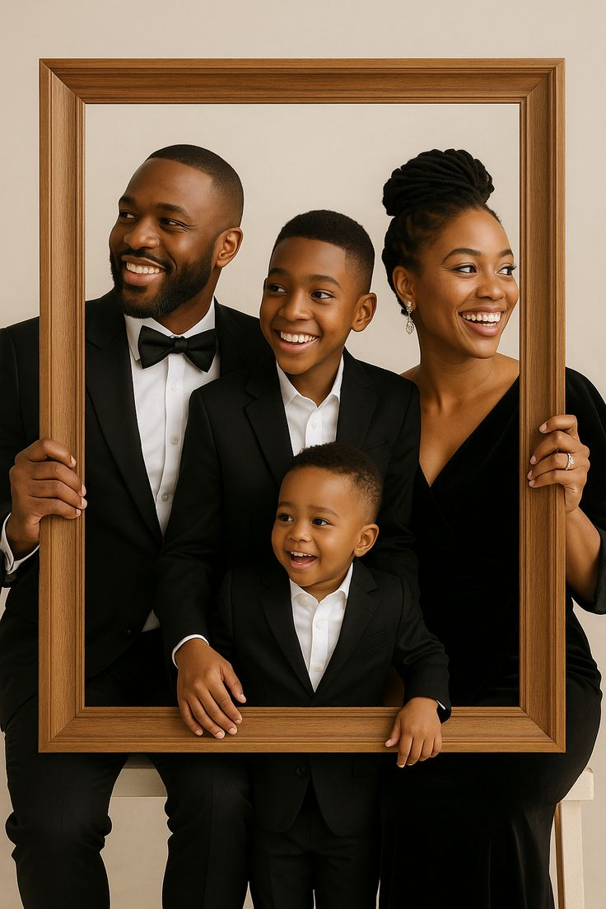
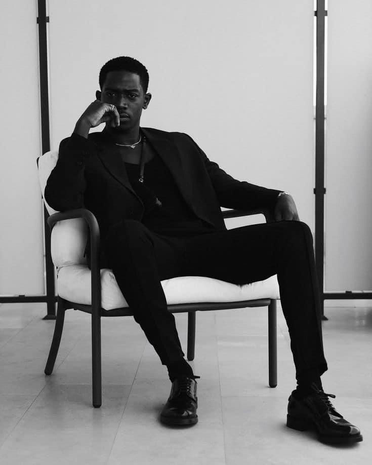
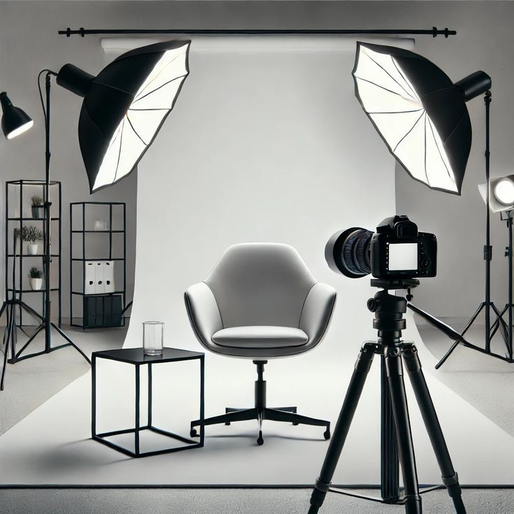
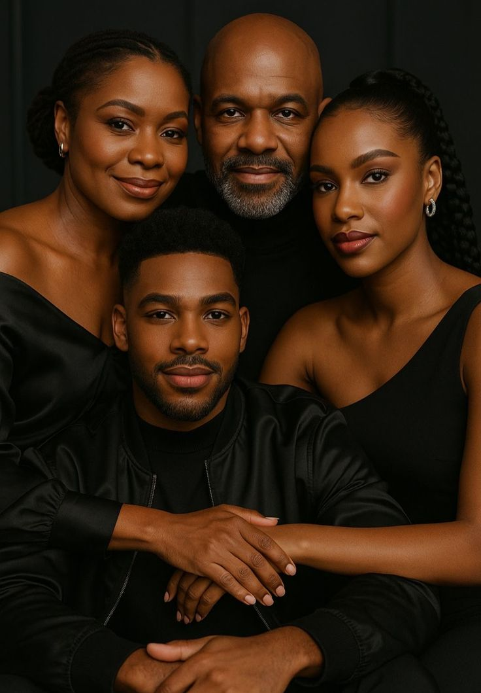

Notre devise : « Capturer l’instant, garder l’émotion.»
Notre devise : « Capturer l’instant, garder l’émotion.»
Chez Arakaza Photo Studio, nous sommes convaincus que la photographie est un art capable de transformer des instants simples en souvenirs éternels.
Notre entreprise est née de la passion pour l'image et du désir de mettre en valeur chaque moment important de la vie.
Nous proposons des services de photographie adaptés aussi bien aux particuliers(mariages, anniversaires, portraits,etc.) qu'aux entreprises(shooting produits, communication visuelle, événements professionnels).
Notre objectif est simple: capturer vos instants uniques avec créativité, professionnalisme et des équipements modernes.

Avec plus de 8 années d'expérience, Jean est spécialié dans la photographie de mariage et de portrait artistique.
Formé à l'école des Beaux-Arts de Paris et ayant participé à plusieurs ateliers internationaux, il a couvert plusieurs mariages et événements à travers le Burundi et la région des Grands Lacs.
Son style unique mélange créativité, lumière naturelle et émotions humaines ce qui rend chaque photo vivante et authentique.
👉"Mon but est de raconter des histoires à travers mes photos, pour que chaque instant devienne inoubliable"

Diplômée en design graphique et passionnée par la photographie depuis son enfance, christine maîtrise les logiciels de retouche le plus avancés(Photoshop, Lightroom, etc.).
Grâce à son expérience, elle transforme chaque cliché en une oeuvre d'art en respectant l'authenticité et les émotions du moment.
Elle a traviallé sur des campagnes publicitaires, des shootings de mode et des projets artistiques, ce qui fait d'elle une référence dans le domaine de l'édition visuelle moderne.
👉"Une photo réussie, c'est une émotion sublimée par la créativité."
Apprenez-en plus sur notre expérience et nos réalisations.
Nous croyons que de grands résultats demandent de grands outils. C'est pourquoi Arakaza Photo Studio investit dans du matériel moderne:





Voici un aperçu du matériel que nous utilisons chaque jour pour vous offrir des images limineuses, nettes et professionnelles.
APS vous offre des cours adaptés pour apprendre les bases de la photographie: réseau, lumière, angles, composition, retouche…
Des séances simples, pratiques et accessibles à tous.